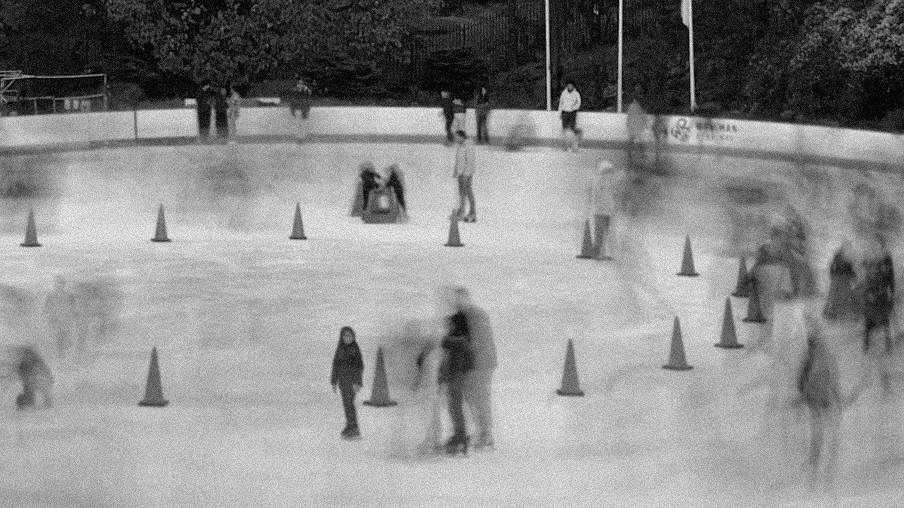
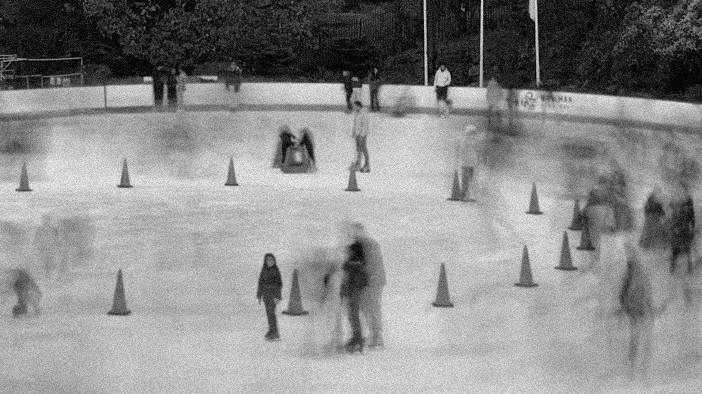
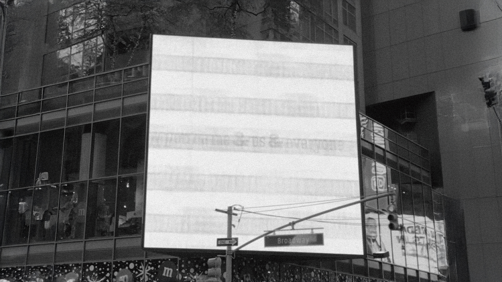
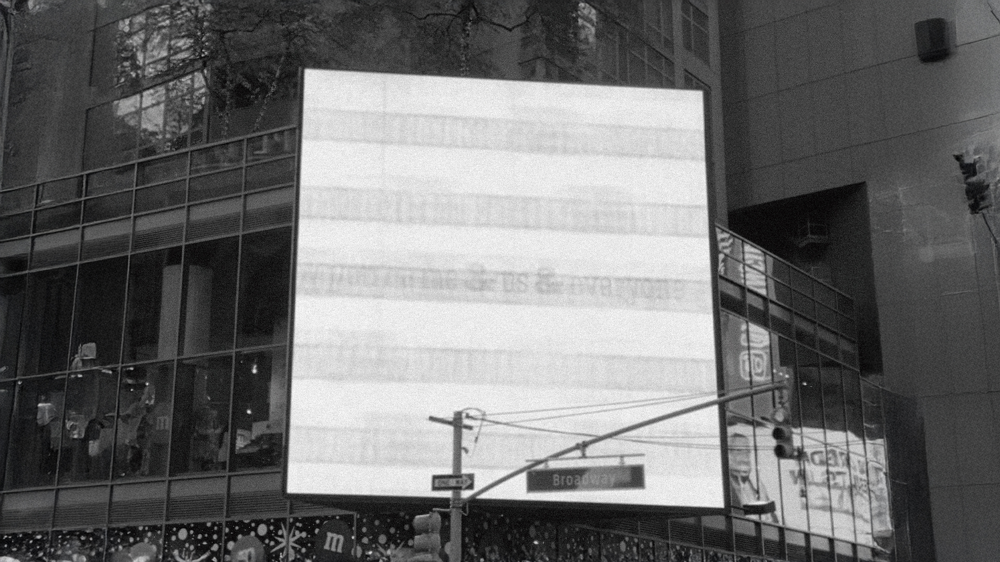

Book & Website
Fast Forward

Oct 2024
Printed matter, Website
5.5 x 8.5 inch
Printed matter, Website
5.5 x 8.5 inch
It's been a year since I moved to New York, and the experience has been both exhilarating and exhausting.
Everything here seems to move at high-speed—people, vehicles, and even the rhythm of daily life.
This project is a visual exploration of that relentless pace.
I examine how "speed" is not just a feature of New York, but a core part of its identity. Using my iPhone and long-exposure photography, I've collected images that capture the city's energy and constant motion. For the analog form, I created a book with two parts: Part A: Energy and Part B: Exhaustion. Each section reveals different aspects of life in the city—one focusing on the rush and excitement, the other on the toll it takes. The book’s layout mixes short quotes with longer essays and articles, creating a rhythm that echoes the city’s pulse. I used condensed typography and bold, italic headlines to evoke a sense of speed and crowding, while bursts of color throughout the pages represent the city's unexpected, vibrant moments.
The digital form brings the project to life online. The website starts with the main page where users get to experience immersive city imagery and messages from different people living in the city, shared as both text and audio. Background soundscapes layer the noise and chaos of the city, but fade away on the information page to create a moment of clarity. In essay page, users can read long-form writing related to the topic.
I examine how "speed" is not just a feature of New York, but a core part of its identity. Using my iPhone and long-exposure photography, I've collected images that capture the city's energy and constant motion. For the analog form, I created a book with two parts: Part A: Energy and Part B: Exhaustion. Each section reveals different aspects of life in the city—one focusing on the rush and excitement, the other on the toll it takes. The book’s layout mixes short quotes with longer essays and articles, creating a rhythm that echoes the city’s pulse. I used condensed typography and bold, italic headlines to evoke a sense of speed and crowding, while bursts of color throughout the pages represent the city's unexpected, vibrant moments.
The digital form brings the project to life online. The website starts with the main page where users get to experience immersive city imagery and messages from different people living in the city, shared as both text and audio. Background soundscapes layer the noise and chaos of the city, but fade away on the information page to create a moment of clarity. In essay page, users can read long-form writing related to the topic.
 

 
